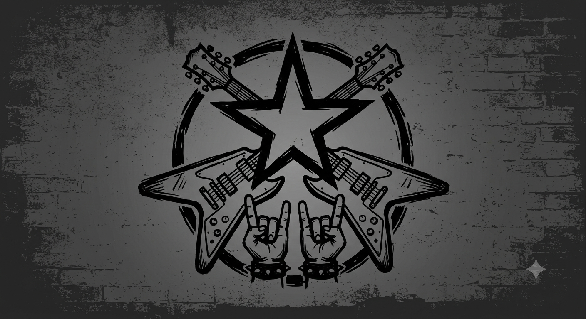

meu primeiro post
bem vindo ao meu blog. Aqui vou compartilhar músicas, histórias de bandas e curiosidades sobre o mundo do rock.
O rock é um estilo musical marcado por guitarras, bateria, baixo e muita atitude. É um gênero que atravessa gerações e possui diversas bandas, estilos e histórias que marcaram a música.
Por: Isabella Antonievicz